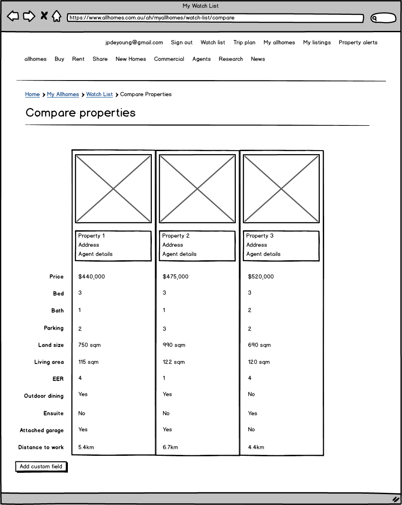

I decided to prototype a feature that would allow users to compare properties from their watchlist. The intended outcome of delivering this feature is to increase user retention by more than 10%. That is, I expect users to come back more frequently to take advantage of this feature.
It will require additions to the user interface of both the allhomes.com.au desktop site and the native mobile applications. To minimise the amount of risk associated with spending the development time associated with delivering this feature, I believe a sensible starting point is to deliver a "button to nowhere" which we can use to gauge user interest with a minimum amount of design and development time.
"Good data tells you what people do, but not why. You need to regularly spend face to face time with customers and users to understand the way they use products and the challenges they face that fall outside the user interface of your product."
- Archie Miller, UX designer for CarMax
I decided to begin my process by conducting a small amount of user research. I recruited a handful of family and friends to participate in short, qualatative user research sessions. I asked them a series of open ended questions designed to give me insight into their experience with allhomes.com.au.
While the sample size was small (a risk that could be mitigated with more research or usability testing of the prototype), I was able to extract some key insights from the sessions. Specifically:
With this knowledge in mind, I began to construct a story map to visualise the process of buying a house. A story map is made up of several elements:
User activities organise tasks into high level groupings. The tasks in each activity might vary from user to user.
User tasks make up the backbone of the map and are arranged in a loose narrative flow.
User stories are short phrases that are the basic building blocks of the map.
With the story map constructed, you can inspect and arrange the user stories to create a release—a slice of tasks that will help people use allhomes.com.au to reach a specific goal. I focused on two stories in particular:
To define the opportunity, I reflected on what we want our users to do. In order to increase retention, we need users to come back to the site more frequently. To accomplish this, we need to give them a reason to come back again and again.
I believe that giving users the ability to compare properties across a range of criteria will result in users returning to Allhomes more frequently.
This can be measured by an increase in the number of repeat visitors and the average number of properties added to watchlists
A lean canvas is used to evaluate a new product idea. It's designed to be done with the product team and completed from the perspective of different customer types. This helps build a shared understanding about why you're building a particular product or feature. The process is designed to be iterative: write down what you know, then come back and improve the canvas with additional details. I would expect this first draft to evolve after rounds of internal discussion and usability testing.
The prototypes I've created represent a rough sketch of how the comparison feature would fit in both the desktop website and the native mobile applications.
A natural entry point for the comparison on the desktop site is the watchlist. Using UI and UX conventions from eCommerce sites, I've added checkboxes next to each property and a "compare selected button". This would take users to a side by side comparison of their properties and allow them to add custom fields as needed.
For the mobile applications, I decided to add a button underneath the inspection details. The expectation is that as users arrive at an inspection, they click the button and are taken to a screen where they can record specific notes against the property for later comparison. Again, they are given the opportunity to add custom fields if needed.
To measure the success of the new feature, I would fist check the number of users who clicked on the button to nowhere. If we saw a significant enough number of users clicking on the button over a period of time, we would begin to test the actual prototype with users.
Once the feature is live, we would want to monitor:
I would expect all of those metrics to increase, which would indicate that the feature is a success. We would need to control for other variables, so if possible, we should ensure that no other new features are being introduced while we are testing the effectiveness of this feature.